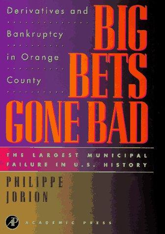

菲利普·乔里翁（Philippe Jorion）是法裔美国金融学家，长期执教于加州大学欧文分校（UCI）安德森管理学院，是全球公认的风险管理权威，所著《风险价值》（Value at Risk）一书是金融风控领域的标准教材。1994年12月，加利福尼亚州橙县（Orange County）宣告破产，成为美国历史上规模最大的市政破产案，而乔里翁正是橙县当地唯一专门研究衍生品的教授。这一地利之便，使他得以第一时间获取大量内部资料，并于1995年迅速推出了《豪赌失败》——这是对橙县破产事件最早、也最为详尽的学术性记录。
故事的主角是橙县财政官罗伯特·西特伦（Robert Citron）。西特伦长期管理着一个规模达74亿美元的市政投资池，多年来以高于同行的回报率赢得了广泛赞誉。他的策略建立在一个简单的赌注之上：短期利率将长期低于中期利率，即维持所谓的"正斜率收益率曲线"。为放大这一判断的收益，西特伦大量借入短期资金买入中长期利率挂钩证券，并在组合中持有约28亿美元的结构性票据（即利率衍生品），使整体杠杆率接近三倍。乔里翁的分析表明，这一策略在利率单边下行时确实可以创造亮眼回报，但一旦利率转向，损失将以加速度扩大。1994年，美联储连续六次加息，橙县投资池在短短数月内损失17亿美元，最终于当年12月申请破产保护。西特伦随后以六项重罪认罪，被罚款10万美元并接受软禁。乔里翁在书中还细致分析了政治环境与监管盲区如何共同为这场灾难创造了土壤——审计委员会的失职、评级机构的滞后，以及公众对"专家"的过度信任。
本书出版后迅速成为风险管理教学的经典案例。多所商学院将其列为课程指定读物，《金融分析师杂志》将橙县破产案称为"二十世纪末最具教育意义的市政金融失败"。乔里翁本人随后将橙县的教训系统化地纳入他对VaR方法论的完善之中，橙县案例也成为此后GARP（全球风险管理专业人士协会）专业考试的重要参考案例。
《豪赌失败》的价值不仅在于对一次具体破产事件的还原，更在于它揭示了衍生品滥用背后的普遍逻辑：杠杆将判断的误差等比例放大，而判断本身往往比人们愿意承认的更加脆弱。对于今天的投资者、风控从业者和公共财政管理者而言，西特伦的故事提醒人们，一个连续多年跑赢市场的策略，往往不是因为使用者更聪明，而是因为他承担了更多隐性风险——直到市场改变，一切才会水落石出。